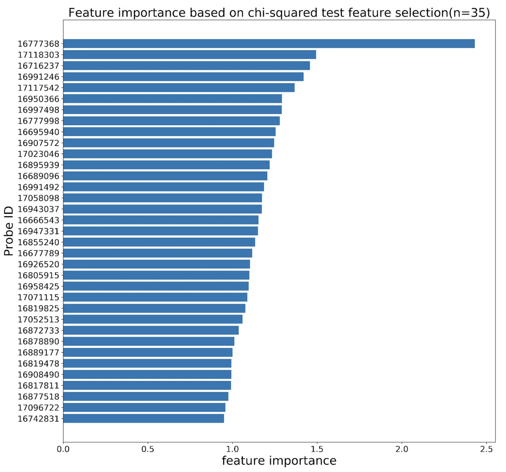

|
I am a software engineer at Flexport. I graduated with my Master's degree in computer science at Columbia University in December 2022. Before, I was at Tsinghua University majoring in Automation (Computer Engineering). I have work and research experience in back end, full stack, and machine learning. Professionally speaking, I am proficient in programming languages like Python, Ruby, C++/C, Java, JavaScript . I am also familiar with different frameworks/tools such as Spring, React, AWS, Docker, Kubernetes, Airflow, Kafka. My previous research experience working with professors at Tsinghua University and UCLA has equipped me with solid skills that allow me to handle difficult problems at work. Email / Resume / Google Scholar / Github |

|
|
|
|
|
video / code A decentralized product review platform powered by blockchain technique (Ethereum VM) to ensure reliable reviews. Users can review products and view the ratings of products. All users and comments are unique and thus the authenticity is maintained. |
|
|
code Designed a Ruby on Rails application on MVC architecture; allowed users to manage cards (collection of coding problems) and groups, and built a platform for them to track and discuss the coding progress Integrated the app with PostgreSQL for data management, overcoming challenges in data migration and indexing |
|
|
video / code Implemented a sudoku learning website that taught basic strategies of sudoku. Provided quiz and feedback to help with the learning experience. Users will be asked to complete 12 quizs after learning 3 basic techniques in sudoku. And they can always refer to the learning pages when they are not sure about the answers. |
|
|
pdf / video / code By building an app which can allow us to ask questions as they come up in our heads, at any moment in time, using the hands free, eyeballs on screen free interface of voice, we can tap into this great and growing whitespace of human-to-human conversation. |
|
I'm interested in machine learning, reinforcement learning, computational biology and computer vision. It is rewarding for me to think and solve real-world problems. |
|

|
Ziyuan Jiang, Jiajin Li, Nahyun Kong, Jeong-Hyun Kim, Bong-Soo Kim, Min-Jung Lee, Yoon Mee Park, So-Yeon Lee, Soo-Jong Hong, Jae Hoon Sul Scientific Report, 2022
pdf /
bibtex /
code
@article{jiang2022accurate,
title={Accurate diagnosis of atopic dermatitis by combining
transcriptome and microbiota data with supervised
machine learning},
author={Jiang, Ziyuan and Li, Jiajin and Kong, Nahyun
and Kim, Jeong-Hyun and Kim, Bong-Soo and
Lee, Min-Jung and Park, Yoon Mee and
Lee, So-Yeon and Hong, Soo-Jong and Sul, Jae Hoon},
journal={Scientific reports},
volume={12},
number={1},
pages={1--13},
year={2022},
publisher={Nature Publishing Group}
}
Developed a more accurate ML pipeline to infer the risk of getting atopic dermatitis. |
|
|
Yiyue Ge, Tingzhong Tian, ..., Ziyuan Jiang, ..., Jianyang Zeng Signal Transduction and Targeted Therapy, 2021
pdf /
bibtex /
code
@article{ge2021integrative,
title={An integrative drug repositioning framework
discovered a potential therapeutic agent
targeting COVID-19},
author={Ge, Yiyue and Tian, Tingzhong and Huang,
Suling and Wan, Fangping and Li, Jingxin
and Li, Shuya and Wang, Xiaoting and
Yang, Hui and Hong, Lixiang and Wu, Nian
and others},
journal={Signal transduction and targeted therapy},
volume={6},
number={1},
pages={1--16},
year={2021},
publisher={Nature Publishing Group}
}
Built an integrative drug repositioning framework, which fully takes advantage of machine learning and statistical analysis approaches to systematically integrate and mine large-scale knowledge graph, literature and transcriptome data to discover the potential drug candidates against SARS-CoV-2.. |
|
|
|
Design and source code from Jon Barron's website |